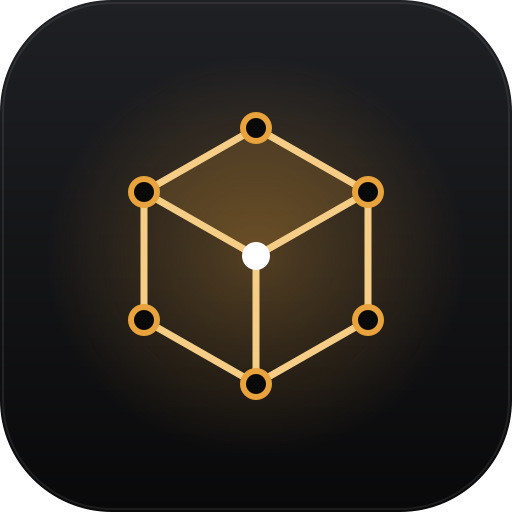

HepiLab
3D Workspace
☰ Panel
⬚
⟲
⊕
↶
↷
↖
✥
⟳
⤢
⇪
✕
⧉
▱
◍
☑
☐
Object
Edit
Vertex
Edge
Face
＋ Add
Kubus
Silinder
Kerucut
Piramida
Bidang
Bola
Torus
Mesh
Inset face (I)
Subdivide (W)
Merge di tengah (M)
Merge by distance
Balik normal face
Pisahkan jadi objek (P)
Balik pilihan (Ctrl+I)
Perluas pilihan
Pilih terhubung (L)
Mirror X
Mirror Y
Mirror Z
Gabung objek (Ctrl+J)
Terapkan rotasi & skala
Origin ke tengah
View
Fokus ke objek (Home)
Depan
Kanan
Atas
Miring (default)
File
Simpan ke file (.json)
Buka file…
Proyek baru
Impor SVG → bidang datar…
Ekspor 3D (.obj)
Ekspor 3D (.stl)
✂ Seam
🧲 Snap: Off
Snap: Vertex
Snap: Edge
Snap: Vertex+Edge
Snap: Grid
◼ Solid
▦ Wireframe
◩ X-ray
● Render (tanpa garis)
✂ Unfold → Pola 2D
Orbit: seret area kosong / klik-kanan · Pan: Shift+klik-kanan · Zoom: scroll · Tab: mode Edit
Siap.
Hasil Unfold
lipat
potong
Buka di Unfold
Kirim ke Vector Workspace
Tutup